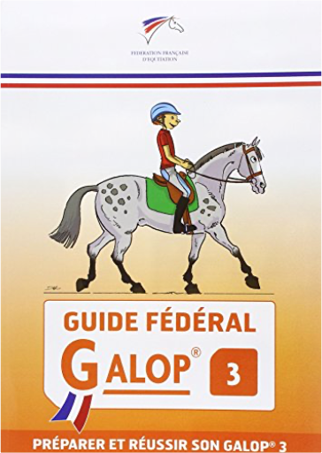
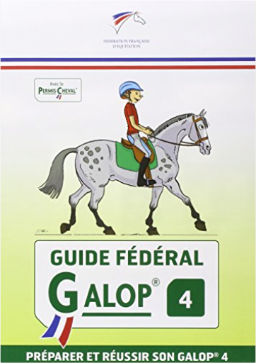
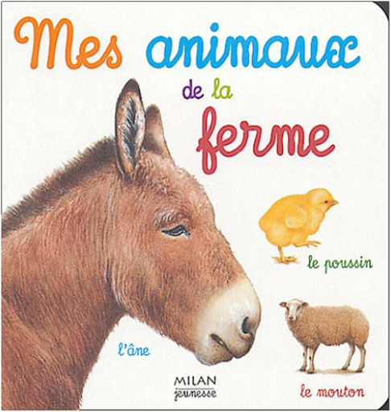
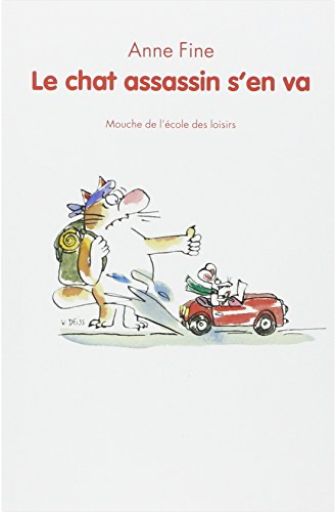
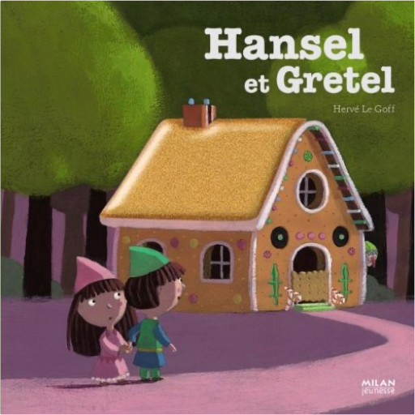
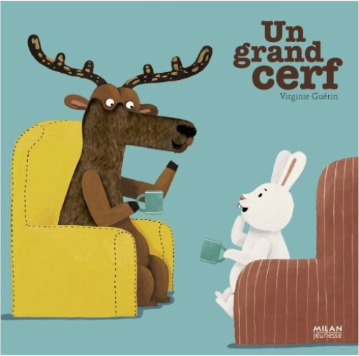
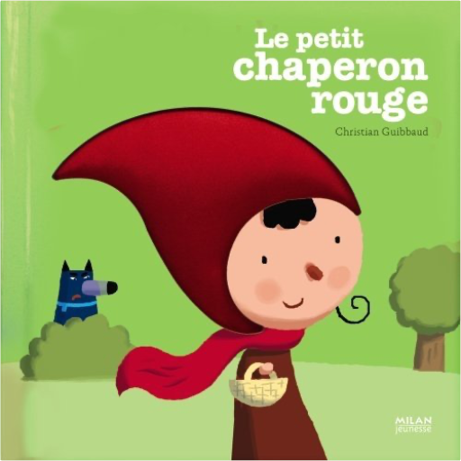

Books
Movies
Albums
Videogames
Games
BD
BD Camille
Blu-ray
Business
Camille
Comics
Cooking
Lego
Manga
Pauline
Photography
Star Wars
T'choupi
Travel
TV Shows
Un livre dont vous êtes le héro
Vinyl
Walt Disney
3
4
5
6
7

Guide fédéral galop 3
FFE

Guide fédéral galop 4
FFE

mes animaux de la ferme
catherine fichaux
les cahiers de filliozat : mes peurs
isabelle filliozat, fred benaglia

le chat assassin s'en va
anne fine
journal d'un chat assassin
anne fine
Brand NEW. We ship worldwide
le Lièvre et la tortue
jean de la fontaine
les bons amis
paul françois

contes et comptines à toucher - hansel et gretel
hervé le goff
les musiciens de brême
jakob et wilhelm grimm, kochka

contes et comptines à toucher - un grand cerf
virginie guérin

contes et comptines à toucher - le petit chaperon rouge
christian guibbaud
3
4
5
6
7


 Made with Delicious Library Made with Delicious Library
Made with Delicious Library Made with Delicious Library